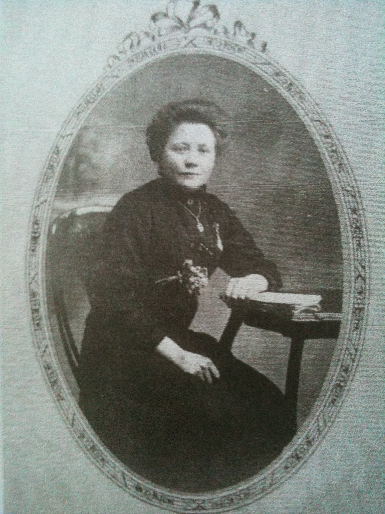
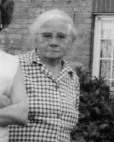
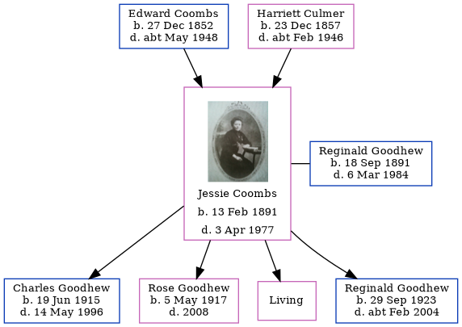

Jessie May Goodhew (née Coombs) 1891 - 1977
[ Home ] | [ Calendar ] | [ Surnames Index ] | [ Errors ] | [ Family History ]A cook and the child of Edward Coombs (an agricultural labourer) and Harriett Culmer, Jessie Coombs, the second cousin twice-removed on the mother's side of Nigel Horne, was born in Hernhill, Kent, England on 13 Feb 18911,2 and married Reginald Goodhew (an aircraft fitter with whom she had 4 children: Charles Thomas, Rose May, Marie Louise and Reginald Norman, along with 1 surviving child) at Parish Church in Hernhill on 4 Aug 19143.
During her life, she was living at Waterham Road in Hernhill on 5 Apr 18917; at Red Lion Inn in Hernhill on 31 Mar 19016; in St Mary Cray, Kent, England on 2 Apr 1911; at 137 Dearne Road, Bolton-upon-Dearne, South Yorkshire, England on 13 Nov 19164 and in 19195; and at 18 Pine Road, Rochester, Kent on 29 Sept 19391.
She died on 3 Apr 1977 in Hernhill2.
Parents
- Edward was born on 27 Dec 1852
- Harriett was born on 23 Dec 1857
Children
- Charles Thomas was born on 19 Jun 1915
- Rose May was born on 5 May 1917
- Reginald Norman was born on 29 Sept 1923
Citations
- 1939 Register - Findmypast (was the wife of the head of the household)
- England & Wales deaths 1837-2007 - Findmypast
- England & Wales Marriages 1837-2005 - Findmypast
- British Army WWI Service Records, 1914-1920 Online publication - Provo, UT, USA: Ancestry.com Operations Inc, 2008.Original data - War Office: Soldiers' Documents, First World War 'Burnt Documents' (Microfilm Copies); (The National Archives Microfilm Publication WO363); Records created or inherited
- Electoral Roll
- 1901 England, Wales & Scotland Census - Findmypast (was age 10 and the daughter of the head of the household)
- 1891 England, Wales & Scotland Census - Findmypast (was age 0 and the daughter of the head of the household)
Media
Jessie Coombs

Jessie Coombs - 2

1891 England, Wales & Scotland Census - GBC/1891/0005777451
England & Wales births 1837-2006 - BMD/B/1891/1/AZ/000125/016
England & Wales marriages 1837-2008 - BMD/M/1914/3/AZ/000241/002
England & Wales deaths 1837-2007 - BMD/D/1977/2/AZ/000420/084
1939 Register Transcription - TNA-R39-1769-1769C-019-05
Family Tree
Map
Generated by ged2site. Last updated on Jul 3, 2024
Known Issues
Residence record for 2 Apr 1911 contains no citation
Location for 5 Apr 1891 (Waterham Road, Hernhill, Kent, England) differs from mother's (Waterham, Hernhill, Kent, England)
Listed in the residence for 13 Nov 1916, but spouse Reginald Goodhew is not
Listed in the residence for 1919, but spouse Reginald Goodhew is not